<2024-07-28 রবি> - <2024-08-15 বৃহঃ>
You can find the shared overleaf for literature review here.
Word Embedding
Fonseca et al explored caste discrimination in indian liteature. They first trained a word2vec model using the newspaper article and then they mapped a correlation graph with the word "Caste" based on cosine similarity. After that, they estimated relative frequence of the word caste in easy article by summing the occurence of the words in each article. They did not sum 1 for each occurence, rather the cosine similarity score. After that, they picked the top 7\% articles and performed LDA on them 1.
TODO Word Count
It counted the keywords against a demography as part of their detailed sociological analysis on the view of that demography in news.
Perspective: Why not talk about our sufferings?
Saleem & Ramasubramanian found that Muslim American students who viewed negative media representations of their religious ingroup, relative to a control video, were less likely to desire acceptance by other Americans and more likely to avoid interactions with majority members. Such representation discrimination incease inter-group distance 2. Haraldsson showcased the way media discrimination hinders progress towards putting femininity on an equal footing with masculinity in the political domain in her theisis 3. Ittefaq et al. revealed that sanitary workers in Pakistan believe that they do not have any representation in Pakistan’s mainstream media to voice their issues. Moreover, they have serious reservations about their polemic social representation and voice concerns regarding the media that often amplify such depictions 4.
Perspective: Racist Stereotypical Representation
In this amazing work, Galdi et al showed through social experiments how stereotypical gay men representation increases social bias about them. Heterosexual Italian men (N = 158) were exposed to a clip portraying (i) a stereotypical feminine gay male character, (ii) a counter-stereotypical masculine gay male character, or (iii) a nature documentary. Compared to the other conditions, exposure to the counter-stereotypical gay character increased discrimination toward gay men, in the form of anti-gay jokes, the higher the level of participants’ prejudice against gay men. Results further demonstrated that this effect was explained by reduced perceived stereotypicality of the character 5.
Perpective: Under-representation hurts
Balasubramaniam et al shows how representation discrimination affects the dalit community. They argue that under-representation of Dalits of Dalits leads to news exclusion related to dalits 6.
Finding news genre
AP News Taxonomy is a classification system for English-language news content that includes standardized subjects, geographic locations, people, organizations and publicly traded companies. This search- and SEO-friendly taxonomy is designed to support digital news products 7. Their classifications are globally recognized and utilized by numerous media outlets.
Business
Climate and environment
Education
Entertainment
General news
Health
Lifestyle
Media
Obituaries
Oddities
Politics
Race and ethnicity
Religion
Science
Sports
Technology
But these genres don't necessarily reflect in our culture. For example, Washington news is not part of our general news, neither is race-ethnicity a significant topic in our news. So we now go through Bangladesh press media to list their genres.
| Newspaper | genre |
| Prothom Alo | Politics, Crime, International, Business, Sports, Entertainment, Jobs, Lifestyle, Local news, Health, Environmental Concern, Education, Technology, Gadgets, Religion, Science, Comic |
| The daily Star | Sports, Business, Entertainment, Life&Living, Youth, Tech&Startup, Environment, Education, Career, Fashion & Beauty, Food & Recipes, Health & Fitness, Lifehacks, Relationships & Family, Travel, TV & Film, Music, Theatre & Arts, Satire, Featured, Heritage, GADGETS, GAMING, GUIDES, STARTUPS |
| Bangladesh Protidin | Local news, Lifestyle, Business, Religion, International, Sports, National news, Campus, Corporate corner, health, Tech world, politics, Chitaggong, Science, Facebook corner, Foreign bangladeshi, Oddities |
We combine these genres and find the following genres. Our detailed combining procedure can be found in this google sheets file.
Politics, Crime, International, Business & Economics, Sports, Entertainment, Jobs, Lifestyle, Health, Environment, Local news, Education, Technology, Religion, Science
Additionally, we consider the news genre Protests and Social Movements, Human rights since that is what we wish to investigate.
We finally match these 17 topics with our earlier trial-and-error news topics and find two mismatch (natural disaster, govt action). We strongly feel that govt action should be a field instead of human rights or Local news.
Ross, Karen, et al. shows an interesting approach. It first discoveres the news genre distributon of newspaper and then compares it with female population 8. 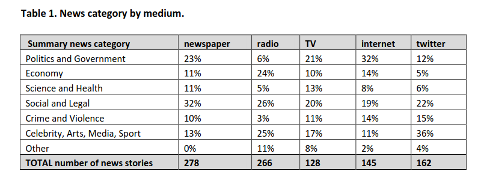
Defining Selected 17 News Genre
I have taken the definitions from ChatGPT. But maybe, we need to take it from some journal. Well, we will need it later on for ChatGPT based news classfication so we won't need such exact definition now.
Finding usual perspective from which newspaper articles are analyzed
For the longest time, newspaper articles have been analyzed manually by researchers. This has restricted the size of data they can process. So in this work, we identify the most famous perspectives from which newspaper articles are analyzed to detect discrimination.
We have also identified the following NLP metrics that require no validation to use them.
Under-representation, mis-representation or Representation Discrimination?
Let us look at existing literature to understand what is usually meant by under-representation and mis-representation.
Under-representation occurs when a particular group is not depicted in media, politics, or other public arenas in proportion to their actual numbers in the population.
Misrepresentation involves depicting a group in an inaccurate, stereotypical, or negative way. It refers to false or misleading portrayals that do not reflect the true nature, culture, or circumstances of the group.
Neither is happening from our findings so far. We found difference in news genre. We have not found any proof of negative stereotypes yet. So The term Representation Discrimination feels more accurate.
We conduct numerous experiments since it is a sensitive topic to make claims on. The experiments are done over a long period of time so we follow the following meta data to store their results.
| Experiment details |
|---|
| Experiment name |
| Date |
| Objective |
| Result |
| Future Work |
| Artifacts (code, input data) |
Observe that, we do not stoe the output of the experiment because once can find that simply by running the code with that input data. Also, you can find our codebase in this github repository.
This our curated dataset]] of ethnic word-contained articles from ebD- Bangla newspaper dataset. We have curated ethnic people related dataset using simply keyword based extraction. We considered the following keywords to filter out the articles.
ethnic_tribe_names = [
"চাকমা", "মারমা", "সাঁওতাল", "ত্রিপুরা", "গারো", "ওঁরাও", "তঞ্চ্যঙ্গা", "ম্রো",
"পাংখো", "চাক", "খেয়াং", "খুমি", "লুসাই","কুকি", "রাখাইন", "মণিপুরী",
"হাজং", "খাসিয়া", "মং", "বর্মন", "পাহাড়ি", "মালপাহাড়ি", "মুন্ডা", "ভূমিজ",
"কন্দ", "পাঙন", "লাওরা", "মুরং", "বাগদী"
] #"বম","কোচ","ডালু","কোল", "রাজবংশী", "পাত্র", "ভিল", "গণ্ড", "খাসি"
ethnicity_directed_words = [
"আদিবাসী" , "আদিবাসি" , "উপজাতি", "নৃগোষ্ঠী"
]Following are the dimensions of resulting datasets.
| Dataset | Size | Approach | Comment |
| eBD Bangla news | 2294710 articles | - | - |
| Curated Ethnic Word Dataset | 337793 articles | Keyword Extraction | Buggy, For list of articles, same list is added continuously. |
| Target Ethnic Articles | 14000 | 5 Keyword | Topic modeling result came out bad due to repetition. |
| Curated Ethnic Word Dataset | 10187 | Keyword Extraction | Fixed the bug where same article was being added for each of its words |
| Most Relevant Articles | 221 | 5 Keywords |
Word embedding model training on the whole dataset. This was a MAJOR blockage in our earlier work.
The only preprocessing we did was this -> to_remove = ['email\xa0protected', '\n\n\n\xa0\n\n\n\n\n', '\u200c্', '\n\n', '\xa0', '\n']. These are the top 10 topics we found in the articles.
Topic 0: "পার্বত্য" "চট্টগ্রাম" "উপজেলার" "ত্রিপুরা" "প্রাথমিক" "শিশুদের" "বিভিন্ন" "উন্নয়ন" "পাঠ্যপুস্তক" "চেয়ারম্যান"
Topic 1: "তঞ্চঙ্গ্যা" "সম্প্রদায়" "উৎসবকে" "তরুণীরা" "পাহাড়ের" "পুরাতন" "নেওয়ার" "লকডাউন" "বান্দরবানে" "সাঙ্গু"
Topic 2: "আদিবাসী" "পরিষদের" "আওয়ামী" "সভাপতি" "সম্পাদক" "বক্তব্য" "পার্বত্য" "আদিবাসীদের" "সাধারণ" "চেয়ারম্যান"
Topic 3: "বৈসাবি" "সাংগ্রাই" "সম্প্রদায়ের" "পাহাড়ি" "ঐতিহ্যবাহী" "এপ্রিল" "অনুষ্ঠান" "উৎসবের" "অনুষ্ঠিত" "প্রধান"
Topic 4: "জন্মদিনকে" "ছোটাছুটি" "নালন্দার" "দলবদ্ধ" "দলগতভাবে" "নৃত্যকলা" "জন্মদিন" "গ্যালারির" "চতুর্থতলায়" "নৃত্যসহ"
Topic 5: "বাংলাদেশে" "হিন্দু" "সাম্প্রদায়িক" "আক্রমণ" "সাম্প্রদায়িকতা" "ধর্মীয়" "কিন্তু" "লোকদের" "মুসলমান" "সাম্প্রদায়িকতার"
Topic 6: "গ্রামের" "উপজেলার" "মেহেরপুর" "জয়পুরহাট" "উদ্দিনের" "বেনাপোল" "পাঁচবিবি" "সাতক্ষীরা" "চুয়াডাঙ্গা" "নববর্ষ"
Topic 7: "পার্বত্য" "বিরুদ্ধে" "ভারতের" "বাহিনীর" "হিসেবে" "বাংলাদেশ" "উপজাতি" "সরকারের" "প্রবেশ" "নির্বাচিত"
Topic 8: "ক্ষুদ্র" "গোষ্ঠীর" "বাঙালি" "সংস্কৃতি" "বিভিন্ন" "ত্রিপুরা" "নিজস্ব" "বাংলাদেশ" "কিন্তু" "বাংলাদেশের"
Topic 9: "বাংলাদেশের" "আমাদের" "বাঙালি" "বাংলাদেশে" "বিভিন্ন" "বাংলাদেশ" "ধর্মের" "মানুষের" "ত্রিপুরা" "প্রশ্ন"
Clearly, stemming is needed here. We used SBNLTK Stemmer here because this project is the largest BNLP library and the developer seems pretty active. After stemming, we got the following topics.
Topic 0: "গোষ্ঠী" "আমা" "ক্ষুদ্" "পৃথিবী" "মেয়ে" "অধিকাংশ" "গুরুত্ব" "মানুষ" "অধিবাসী" "ত্রিপুরা"
Topic 1: "পার্বত্য" "চট্টগ্রাম" "আদিবাসী" "শিক্ষার্থী" "পরিষদ" "চেয়ারম্যান" "প্রাথমিক" "ক্ষুদ্" "সভাপতি" "শিশু"
Topic 2: "বাংলাদেশ" "হিন্দু" "ভারত" "বিরুদ্ধ" "সংখ্যালঘু" "নির্যাতন" "প্রশ্ন" "আক্রমণ" "কিন্তু" "সাম্প্রদায়িক"
Topic 3: "মুক্তিযোদ্ধা" "স্বাধীনতাযুদ্ধে" "জামুকা" "পদ্ধতিগত" "শিববাড়ি" "লক্ষ্যবস্তু" "কাক্সিক্ষত" "ইদ্রিস" "অ্যাম্বুশ" "করোইয়ে"
Topic 4: "উপজেল" "আওয়ামী" "ইউনিয়ন" "পরিবার" "উদ্দিন" "এলাকা" "সাম্প্রদায়িকতা" "স্থানীয়" "উপজেলা" "বিএনপি"
Topic 5: "সম্প্রদায়" "পাহাড়" "ত্রিপুরা" "অনুষ্ঠান" "শ্রেণি" "উৎসব" "সাংস্কৃতিক" "প্রধান" "তঞ্চঙ্গ্যা" "বাস্তবায়ন"
Topic 6: "পাহাড়" "আশ্রম" "বান্দরবান" "পরিবহন" "ব্যাখ্যা" "সাঙ্গু" "প্রকৃতি" "যাত্" "দূরত্ব" "ধর্মমত"
Topic 7: "অনেকদিন" "অভিনয়ের" "রফিকুন" "সনদপত্র" "সাইফু" "স্মৃতিকাতর" "স্লাইড" "হুটোপুটি" "অধ্যবসায়ী" "অনেককিছু"
Topic 8: "বাংলাদেশ" "বাঙা" "আমা" "বিভিন্ন" "মানুষ" "আদিবাসী" "ক্ষুদ্" "সাঁওতাল" "নিজস্ব" "জনগোষ্ঠী"
Topic 9: "গ্রাম" "সীমান্ত" "বিহার" "বর্ণমালা" "পদ্ধতি" "প্রাচীন" "দক্ষিণ" "মেহেরপুর" "ব্যবহার" "জয়পুরহাট"
DataFrame shape(10, 2)
Also, the following is our list of initial keywords.
ethnic_tribe_names = [
"চাকমা", "মারমা", "সাঁওতাল", "ত্রিপুরা", "গারো", "ওঁরাও", "তঞ্চ্যঙ্গা", "ম্রো",
"পাংখো", "চাক", "খেয়াং", "খুমি", "লুসাই","কুকি", "রাখাইন", "মণিপুরী",
"হাজং", "খাসিয়া", "মং", "বর্মন", "পাহাড়ি", "মালপাহাড়ি", "মুন্ডা", "ভূমিজ",
"কন্দ", "পাঙন", "লাওরা", "মুরং", "বাগদী"
] #"বম","কোচ","ডালু","কোল", "রাজবংশী", "পাত্র", "ভিল", "গণ্ড", "খাসি"
ethnicity_directed_words = [
"আদিবাসী" , "আদিবাসি" , "উপজাতি", "নৃগোষ্ঠী"
]
We modeled coherence score against different alpha values of LDA model. For 10187 dataset, 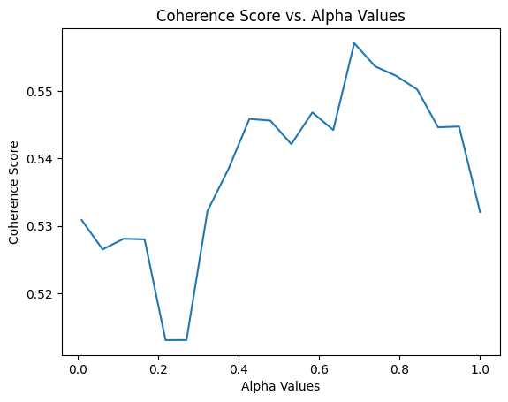 We had the highest coherence score for alpha value around 73. So we get our final topic list from an LDA with coherence score = 0.7394. The topic list is below.
Topic 0: "গ্রেফতার" "পুলিশ" "অভিযান" "গ্রাম" "উদ্ধ" "উপজেল" "অভিযোগ" "ব্যবসায়ী" "বিরুদ্ধ" "এলাক"
Topic 1: "বিচারপতি" "হাইকোর্ট" "আইনজীবী" "কর" "আবেদন" "পুলিশ" "কর্মকর্তা" "মন্ত্রণালয়ের" "ওবায়দুল" "জেনার"
Topic 2: "পরিবার" "আক্রান্ত" "স্বাস্থ্য" "ত্রিপুরা" "হাসপাতাল" "ইউনিয়ন" "মৃত্যু" "বান্দরবান" "দুর্গম" "কর্মকর্তা"
Topic 3: "সম্পাদক" "সাধারণ" "সভাপতি" "পাপিয়া" "ছাত্রলীগ" "আওয়ামী" "সম্মেলন" "বর্তমান" "নরসিংদী" "কেন্দ্রীয়"
Topic 4: "আন্দোলন" "ছাত্রলীগ" "শিক্ষার্থী" "প্রধানমন্ত্রী" "দাবি" "সাধারণ" "বিশ্ববিদ্যালয়ের" "আন্দোলনকারী" "বিক্ষোভ" "বিশ্ববিদ্যাল"
Topic 5: "ব্যবস্থা" "সরকারি" "ক্ষেত্র" "বিসিএমসি" "মুক্তিযোদ্ধা" "নিশ্চিত" "প্রধানমন্ত্রী" "বাংলাদেশ" "সরকার" "মাধ্যম"
Topic 6: "পাহাড়" "পর্যটন" "পর্যটক" "বিভিন্ন" "কক্সবাজার" "পর্যন্ত" "স্থানীয়" "কর্মকর্তা" "নির্মাণ" "এলাকা"
Topic 7: "কাশ্মীর" "ভারত" "বাংলাদেশ" "ভারতী" "পাকিস্তান" "দি" "সংবিধান" "অনুচ্ছেদ" "মর্যাদা" "রাজ্য"
Topic 8: "ব্যাংক" "গ্রাম" "প্রকল্প" "বিভিন্ন" "বিক্র" "ব্যবস্থা" "কোম্পানি" "পর্যন্ত" "বিদ্যুৎ" "ব্যবস্থাপনা"
Topic 9: "চট্টগ্রাম" "আক্তার" "অভিযোগ" "পরিবার" "বিরুদ্ধ" "ব্যবস্থা" "কর্মকর্তা" "অফিস" "পুলিশ" "মামল"
Topic 10:"শিক্ষার্থী" "শিক্ষা" "আমা" "ইঞ্জিনিয়ারিং" "অ্যান্ড" "বিভাগ" "প্রতিষ্ঠান" "শিক্ষক" "পরীক্ষা" "ক্যাম্পাস"
Topic 11:"রোহিঙ্গা" "রাখাইন" "মিয়ানমারের" "সেনাবাহিনী" "বাংলাদেশ" "মিয়ানমার" "ক্যাম্প" "দেশ" "সীমান্ত" "জাতিসংঘ"
Topic 12:"এলাকা" "হাসপাতাল" "সন্ত্রাসী" "চাকমা" "ইউপিডিএফ" "খাগড়াছড়ি" "উপজেল" "ঘটনাস্থল" "উদ্ধ" "উপজেলা"
Topic 13:"প্রার্থী" "আওয়ামী" "বিএনপি" "নির্বাচন" "চেয়ারম্যান" "ইউনিয়ন" "উপজেলা" "উপজেল" "স্বতন্ত্র" "হয়েছেন"
Topic 14:"কিন্তু" "আমা" "মানুষ" "কর" "প্রশ্ন" "সেখান" "যা" "হিস" "সম্পর্ক" "দি"
Topic 15:"বাংলাদেশ" "বঙ্গবন্ধু" "মাধ্যম" "বিভিন্ন" "নাগরিক" "উন্নয়ন" "অনুষ্ঠান" "মুক্তিযুদ্ধ" "সমাজ" "আন্দোলন"
Topic 16:"উপজেলা" "চেয়ারম্যান" "কর্মকর্তা" "সভাপতি" "প্রধান" "বক্তব্য" "সভাপতিত্ব" "প্রশাসন" "সম্পাদক" "উপস্থিত"
Topic 17:"পার্বত্য" "চট্টগ্রাম" "আদিবাসী" "রাঙ্গামাট" "পাহাড়" "পরিষদ" "প্রধান" "ত্রিপুরা" "অনুষ্ঠান" "আঞ্চলিক"
Topic 18:"সম্পাদক" "চৌধুরী" "উদ্দিন" "অ্যাডভোকেট" "মোহাম্মদ" "প্রমুখ" "কুমিল্লা" "বক্তব্য" "সমাবেশ" "চট্টগ্রাম"
Topic 19:"সাংস্কৃতিক" "প্রশিক্ষণ" "অধ্যাপক" "পরিচালক" "অনুষ্ঠান" "শ্রদ্ধা" "শিল্পী" "একাডেমি" "কুমিল্লা" "মোজাফফর"
It is experiment on 5130 ethnic article. The topics are:
Topic 0 "প্রার্থী" "বান্দরবান" "নির্বাচন" "উন্নয়ন" "প্রতিবেদন" "নির্মাণ" "বিএনপি" "হয়েছেন" "মারমা" "প্রকল্প"
Topic 1 "বাংলাদেশ" "শ্রেণি" "আমা" "কিন্তু" "ক্ষুদ্" "ক্ষেত্র" "বিভিন্ন" "মানুষ" "সেখান" "হিস"
Topic 2 "মোহাম্মদ" "কক্সবাজার" "অতিরিক্ত" "কেন্দ্র" "আক্রান্ত" "পরিচালনা" "তাদের" "স্থান" "প্রস্তুত" "যুগান্তর"
Topic 3 "মামলায়" "চৌধুরী" "উদ্দিন" "আক্তার" "আব্দুল" "বঙ্গবন্ধু" "উদ্দীন" "আসামি" "সুলতানা" "উল্লাহ"
Topic 4 "আওয়ামী" "জেএসএস" "নেতৃত্ব" "জনসংহতি" "সমিতি" "নেতাকর্মী" "কাপ্তাই" "ছাত্রলীগ" "মহানগর" "সাধারণ"
Topic 5 "তঞ্চঙ্গ্যা" "বিশ্ববিদ্যাল" "বিশ্ববিদ্যালয়ের" "প্রবন্ধ" "ভূঁইয়া" "সার্বিক" "প্রকৌশলী" "সম্প্রসারণ" "নিজ" "কলকাতা"
Topic 6 "উপজেলা" "চেয়ারম্যান" "সম্পাদক" "সভাপতি" "কমি" "প্রধান" "অনুষ্ঠান" "পরিষদ" "বক্তব্য" "কেন্দ্রীয়"
Topic 7 "রোহিঙ্গা" "ঘটনাস্থল" "সেনাবাহিনী" "বাহিনী" "রাখাইন" "ক্যাম্প" "নিহত" "সশস্ত্" "সীমান্ত" "মিয়ানমারের"
Topic 8 "উপজেল" "ইউনিয়ন" "স্থানীয়" "এলাকা" "গ্রাম" "হাসপাতাল" "উদ্ধ" "প্রধানমন্ত্রী" "অভিযান" "পরিবার"
Topic 9 "আদিবাসী" "নির্দেশ" "সাঁওতাল" "গাইবান্ধা" "শ্রমিক" "বিক্ষোভ" "পশ্চিম" "উচ্ছেদ" "কর্মচারী" "পল্লী"
Topic 10 "২শালবন" "১৯১টি১" "৫মুক্তিযুদ্ধের" "৪বুদ্ধিজীবী" "৩৮উপরের" "৩৭কাকে" "২১বাংলায়" "২০মুক্তিবাহিনীর" "অনুমোদনকমলগঞ্জ" "১০জাতিসংঘের"
Topic 11 "পার্বত্য" "চাকমা" "চট্টগ্রাম" "পাহাড়" "সন্ত্রাসী" "ইউপিডিএফ" "ত্রিপুরা" "খাগড়াছড়ি" "রাঙ্গামাট" "শুক্রবার"
Topic 12 "সরকারি" "মাধ্যম" "শিক্ষার্থী" "রিপোর্ট" "বিভিন্ন" "পাশাপাশি" "সংগ্রহ" "কার্যক্রম" "সংগঠন" "প্রতিষ্ঠান"
Topic 13 "২শালবন" "১৯১টি১" "৫মুক্তিযুদ্ধের" "৪বুদ্ধিজীবী" "৩৮উপরের" "৩৭কাকে" "২১বাংলায়" "২০মুক্তিবাহিনীর" "অনুমোদনকমলগঞ্জ" "১০জাতিসংঘের"
Topic 14 "হত্য" "স্ত্রী" "কুমিল্লা" "নারী" "গাজীপুর" "ধর্ষণ" "ভ্রাম্যমাণ" "কিশোরী" "কারাদণ্ড" "ইনচার্জ"
Issues
Artifacts
| Artifact | Link |
|---|---|
| Code | ethnic5342corex.ipynb |
| Data | etnic5342data |
<2024-07-28 রবি> Objective: Since supervised topic modeling gave bad topics, let us try corex.
We collected 5342 ethnic articles from (4.4M->10132) news articles. We then used semi-supervised CoRex topic modeling. We used the following words as anchors.
anchors = [["ক্রীড়া", "রুপা", "স্বর্ণপদক", "ব্রোঞ্জপদক"], ["নির্বাচন","প্রার্থী", "চেয়ারম্যান"], ["পর্যটক"], ["উদযাপন", "নবান্ন", "উৎসব"], ["বিদ্রোহ", "কল্পনা"], ["মামলা"] , ["সরকার", "লুটপাট", "দুর্নীতি", "প্রশিক্ষণ"], [ "সেতু", "সংস্কার", "সংকট", "পানি"], ["বাংলাদেশ", "বিমানবাহিনী", "অফিসার", "ক্যাডেট"] ]Later, we also collected exactly 5342 nonethnic articles for an equal comparison. The results are in result section below.
Result
The topic coherence (tc) score is 137.05506096485365. We also required 50 topics due to the sheer size of dataset. For docprob > 20.0, we found the following distribution of docs for 50 topics, summarized under 15 genre using ChatGPT-4o and manual supervision. 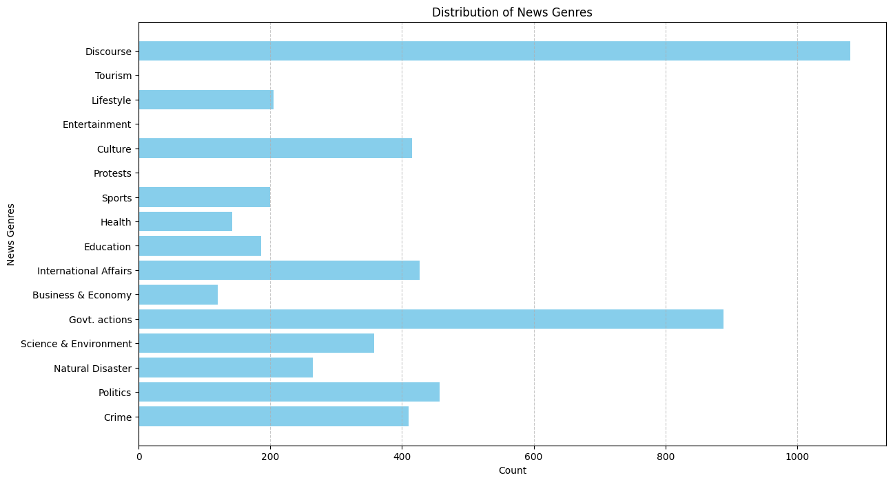
For 5342 nonethnic articles, the topic coherence score and individual docprob score came out very low. So for the SAME docprob > 20.0, we only got 1891 articles that are
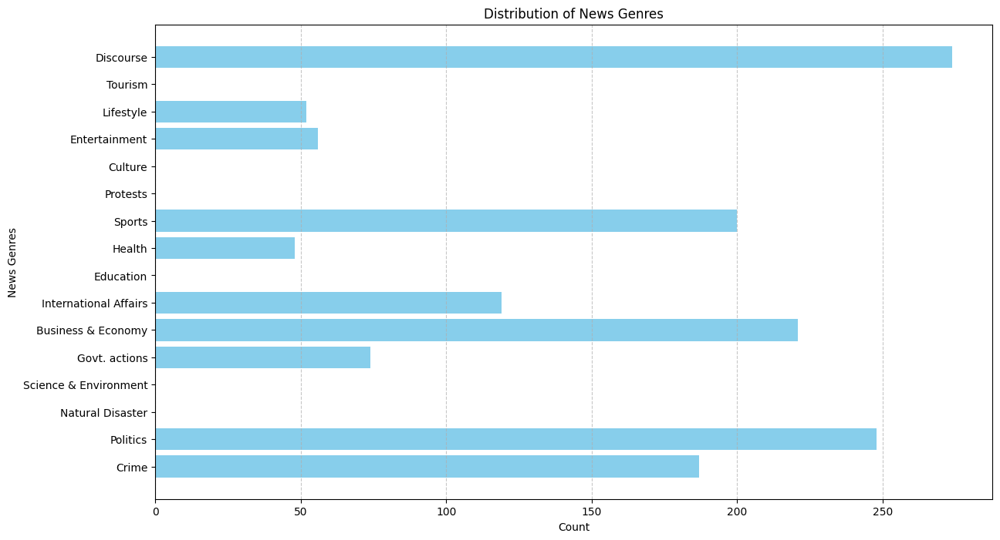
Issues
Artifacts
| Artifact | Link |
|---|---|
| Code | ethnic5342corex.ipynb |
| Data | etnic5342data , nonethnic5342data , Excel containing genre distribution |
<2024-08-09 শুক্র> Objective: Quality data is necessary so we need to annotate to clean the data. Its also because of our definition of exact article.
I first did an exploratory analysis of the articles. When annotating, we paid close attention to why we are annotating the data as such by noting down the reason. It increased our understanding of the underlying data. We used the following interface for this stage of annotation and ended up annotating around 100 data.
If we remember, we only did keyword based extraction to collect ethnic article dataset. To make it cleaner, we decided to annotate them manually and identify the exact articles which are about ethnic people. But annotating 5000+ articles is a mammoth undertaking. So we considerd keybinding - user will just see the article and press E/N to annotate ethnic, nonethnic. Usage of keybinding increase annotation speed significantly. But still, we annotated around 150 nonethnic articles. 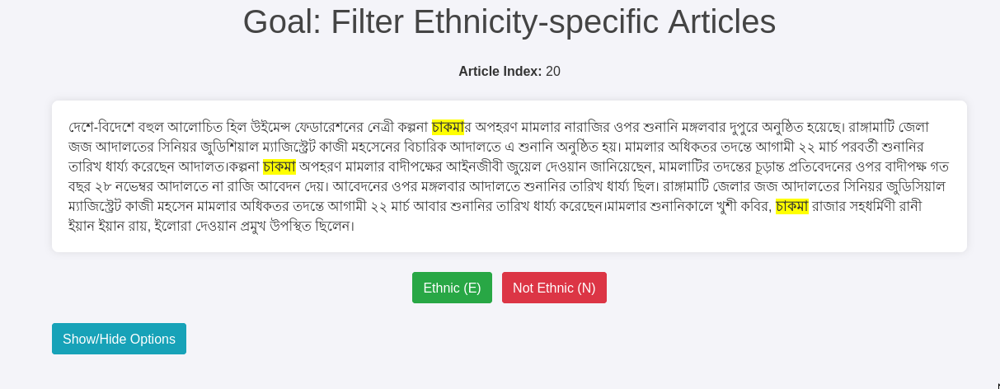
We also made one tool for easy understanding of Topics in Topic modeling by inspecting the documents in each topic.
Result
Issues
Artifacts
| Artifact | Link |
|---|---|
| Code | Annotation tool code |
| Data | ethnicdatasetexp05342annotated1-151.csv , exploratory100annotation |
<2024-08-14 বুধ> Objective: Seeing if gemini-1.5 flash free tier can be used for annotation
A major part of our experiment is genre classification. We have identified the following 15 genres: Crime, Politics, Natual Disaster, Sciene & Environment, Government actions, Business & Economy, International Affairs, Education, Health, Sports, Protests, Culture, Entertainment, Lifestyle, Discourse. Additionally, we also wanna find if the description is Straight, Investigation, Commentary.
Human are biased at annotating things they relate to. According to a journalist on his comment about LLM for news analysis, he said and I quote, "LLMs are the least biased journalist". So even without rigourous validation, we went with experimenting with Gemini-1.5 for news genre and news style annotation.
Result
We picked 100 articles from our 5132 ethnic news articles (which we extracted using keywords) and as we can see, most articles are on crime and discourse.
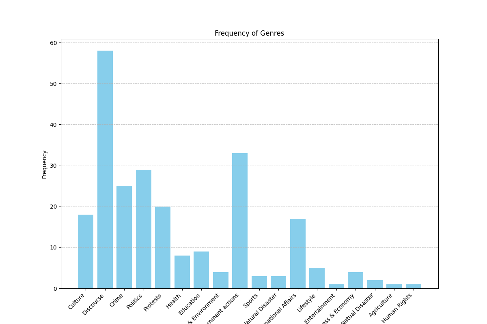
We tried to annotate non-ethnic articles as well but i think we soon ran out of free usage limit.
Issues
Artifacts
| Artifact | Link |
|---|---|
| Code | Gemini15.ipynb |
| Data | ethnicdatasetexp05342 |
| Gemini Annotations | Gemini 100 Annotations in Drive |
<2024-08-15 বৃহঃ> Objective: Seeing if using more articles gives us a more complete distribution of usual news genre.
We collected 100k nonethnic articles from 4.4M news articles. We then used semi-supervised CoRex topic modeling. We used the following words as anchors.
anchors = [["ক্রীড়া", "রুপা", "স্বর্ণপদক", "ব্রোঞ্জপদক"], ["নির্বাচন","প্রার্থী", "চেয়ারম্যান"], ["পর্যটক"], ["উদযাপন", "নবান্ন", "উৎসব"], ["বিদ্রোহ", "কল্পনা"], ["মামলা"] , ["সরকার", "লুটপাট", "দুর্নীতি", "প্রশিক্ষণ"], [ "সেতু", "সংস্কার", "সংকট", "পানি"], ["বাংলাদেশ", "বিমানবাহিনী", "অফিসার", "ক্যাডেট"] ]Result
The topic coherence (tc) score is 52.49676727298845. We also required 50 topics due to the sheer size of dataset. For docprob > 20.0, we found the following distribution of docs for 50 topics, summarized under 15 genre using ChatGPT-4o and manual supervision. 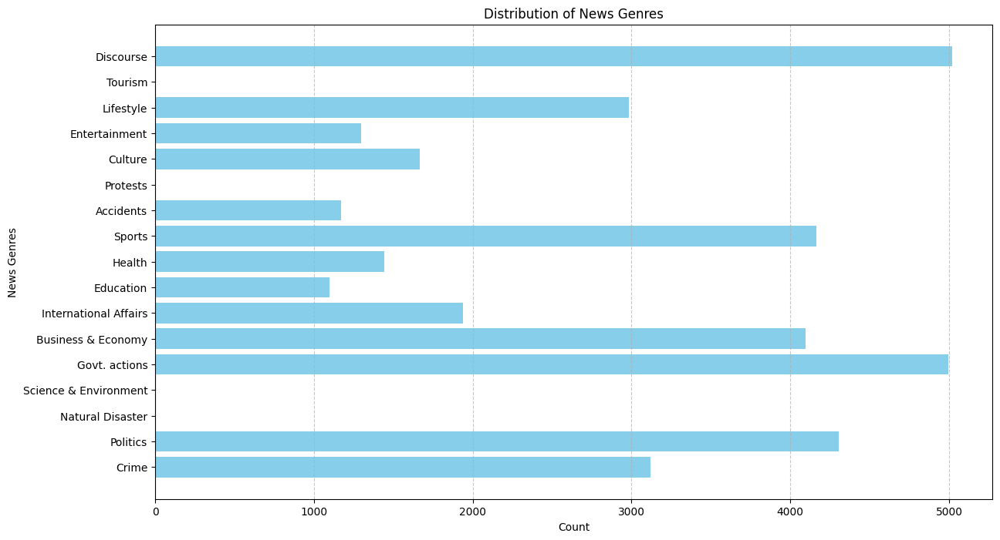
Issues
discourse genre. It is as if every news is a discourse.Anchor words for each of the 15 genre.Artifacts
| Artifact | Link |
|---|---|
| Code | collecting100knonethnicarticles.ipynb , Kaggle link , CoRex code |
| Data | 100k nonethnic articles in drive , Excel containing genre distribution |
Objective: Getting a final result on ethnic people related articles' topic distribution.
Since we are using CoRex, anchor words selection is an important phase. So we first select generic words as anchor words and then select ethnicity specific ethnic words. We will see what performance difference there is. Note: We did not do it. Because it would add bias to the process. For such a critical topic, we want to do it as unbiased as possible.
Note that, we increased threshold to 25.0 here since docprob was higher for overall distribution.
Result
We achieved a topic correlation score of 143.63331714565578. Following is our result for CoRex Semi-Supervisd topic modeling on 4893 ethnic data. 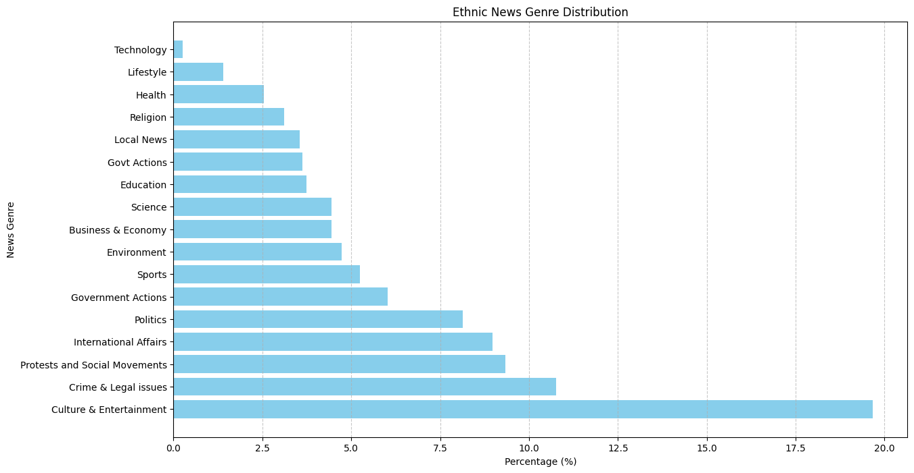
Issue
Artifacts
| Code | 4893 ethnic corex.ipynb |
| Data | 4893 ethnic articles. |
Objective: Getting a final result on usual news topic distribution in Bangla.
Result
Following is our result for CoRex Semi-Supervisd topic modeling on 100k sample articles from our original 4.4M articles. We achieved a topic correlation score of 55.4916729561928. 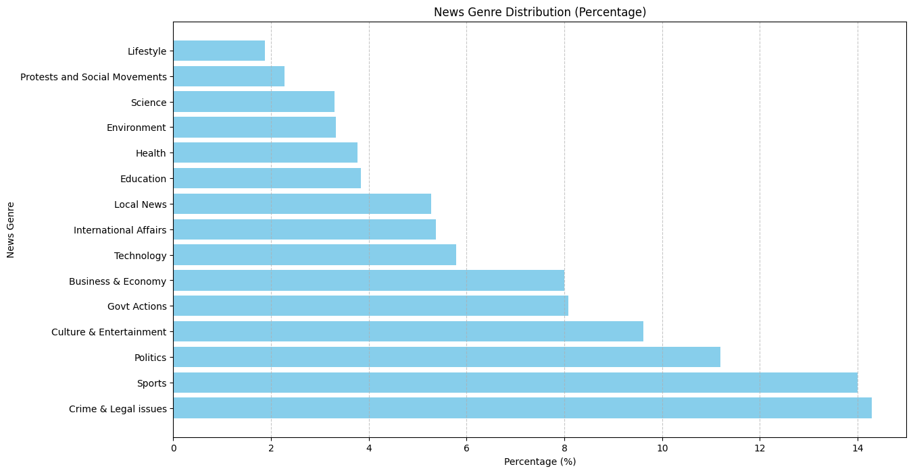 We validate our news genre distribution against work by Ross, Karen, et al. Their news genre distribution strongly correlates with our findings, except Sports genre 14. BD culture have strong feelings regarding sports, speciall football and cricket. So it explains away our distriution.
Issue
Artifacts
| Code | Bangla news distribution (100K) with CoRex.ipynb |
| Data | 100k nonethnic articles in drive , Excel containing genre distribution |
<2024-08-14 বুধ> Objective: Seeing if gemini-1.5 flash free tier can be used for annotation Because all ethnic news articles can be called local news and that is not meaningful for us. So we add ""
You are a Bangla news article analyzer. I will give you a news article and you will say which genre(s) it belongs to. The genres are: Politics, Crime, International Affairs, Business & Economy, Sports, Culture & Entertainment, Jobs, Lifestyle, Health, Environment, Local news, Education, Technology, Religion, Science, Protests and Social Movements, Govt Actions. Additionally, you will also say if the description is Straight, Investigation, Commentary. Identify the perspective of any ethnic person mentioned in the article, choosing from the following categories: Subject, Spokesperson, Expert or Commentator, Personal Experience, Popular Opinion, Eyewitness. Return me just a json of {\"genre\": GENRE, \"description_style\": STYLE, \"perspective\": PERSPECTIVE}. Note that, each news will have at most 3 genres, ideally 1.
Result
Failed! Because of quota limit. Gemini would stop after processing 15 articles. (IDK why).
Issues
Artifacts
| Artifact | Link |
|---|---|
| Code | Gemini15.ipynb |
| Data | ethnicdatasetexp05342 |
| Gemini Annotations | Gemini 100 Annotations in Drive |
Atuel, Hazel et al provided a work very similar to ours in their work on majority and minority representation 15. They showed topic distribution, ethnic article count and ethnic article size as a means to understand media representation. So we now try to find prove the hypothesis.
| Group | Total Articles | Average |
|---|---|---|
| Ethnic | 4893 | 440.65563049254035 |
| Nonethnic | 100k | 124.93548193554193 |
Using Welch's t-test, p-value = 1.840763388749358e-195. For level of significance 0.05, we reject the H0.
We also do some wordclouds here. For remove_stopword phase, we used a dictionary of stopwords, along with len(word)>3. 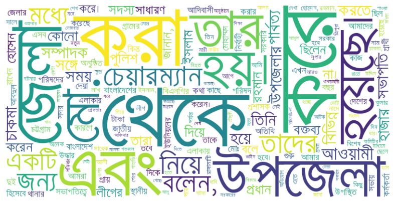 For len(word)>5, the word cloud is: 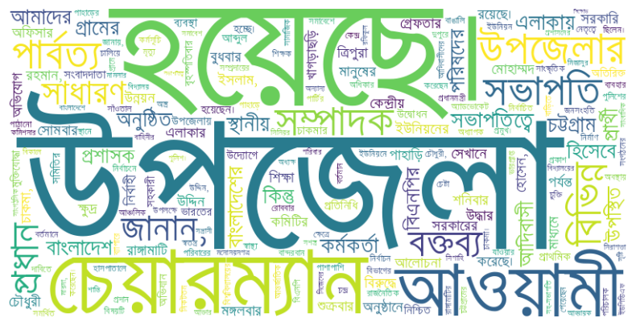
Artifacts
| Code | dataanalysis.ipynb , Bangla Word Cloud.ipynb |
| Data | 4893 ethnic articles., 100k nonethnic articles in drive , |
Topic based word cloud did not work as expected, even though we rechecked stop word removal step. We think word cloud won't give us useful insight here because we use keyword based approach to select the ethnic articles. And thanks to that, not all articles are entirely ABOUT ethnic people. They just contain the name of ethnic minorities. 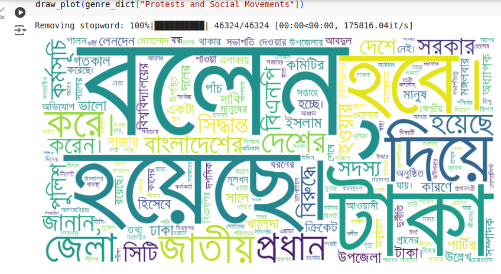
Artifacts
| Data | 4893 ethnic articles |
| Code | Bangla word cloud for topic.ipynb |
We use pretrained models from hugging face for this task. CSEBuetnlp published a similar Sentiment analysis using LLM paper recently 16. CUET also has a very nice data crawler and sentiment analysis code 17.
Result
It was a failure. We could not run any reliable model. We also think that sentiment won't give us any interesting result. Because it is not that bengali is extremely prejudiced towards Ethnic minorities, which is the case for western racism and such. They are just under-represented, often without malicious intent from publisher's part and more due to ignorance. For skl25/banglabert-sentiment, 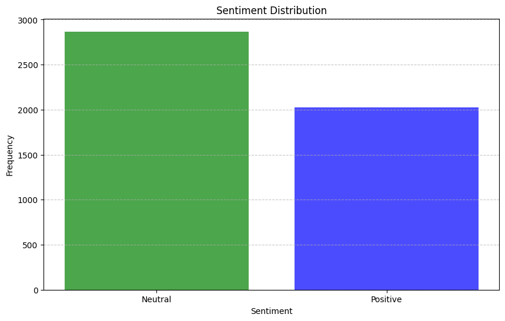 This model underfits for Negative sentiment. Even for "I hate you", it returns positive sentiment.
Issues
Artifacts
| Artifact Type | Link |
|---|---|
| Code | Bangla Sentiment Analysis.ipynb |
| Data | 4893 ethnic articles. |
In earlier versions, we did not handle punctuations so we had some noises. In this version, we handle punctuations and also, some more stopwords. The output is less noisy.
For total 4893 ethnic articles: 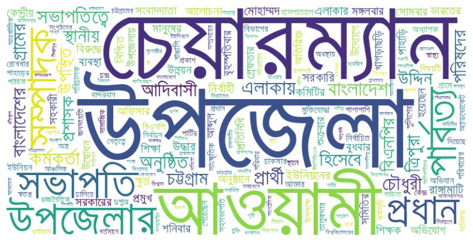 For govt actions topic: 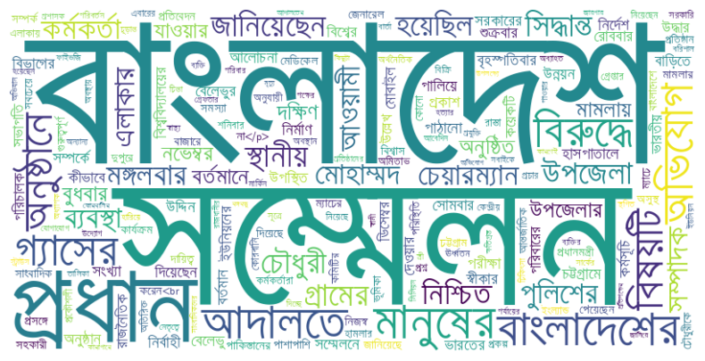 For protests topic: 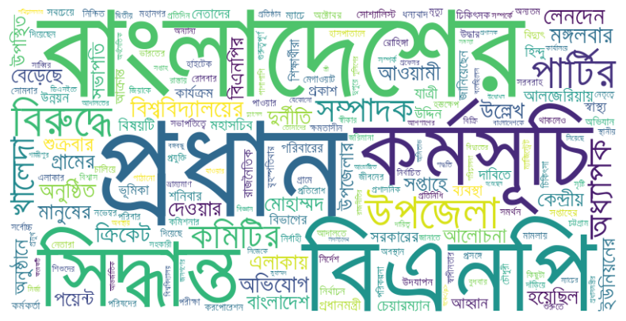
Issues
Artifacts
| Data | 4893 ethnic articles |
| Code | Bangla word cloud for topicv2.ipynb |
Our performance of isethnic:
| Model | isethnic | Featured | Style | Sentiment | Genre | Experiment |
|---|---|---|---|---|---|---|
| gpt-4o-mini | 4/5 | Less Diverse | Straight | Less Diverse | LGTM | prompt |
| gpt-3.5-turbo | 5/5 | Diverse | Straight | Diverse | LGTM | result , prompt |
| gemini-1.5-turbo | ||||||
| gpt-4o-mini (512ctx) | 4/5 | Subject | Diverse | Diverse | LGTM | prompt |
| gpt-3.5-turbo (512ctx) | 4/5 | Diverse | Diverse | Negative | LGTM | prompt |
Now we really only need isethnic field. The rest 7 are just considering our cost, nothing else. So lets use gpt-3.5-turbo to get results for 100 articles.
| Model | Accuracy | Prompt | CM | Result |
|---|---|---|---|---|
| gpt-3.5-turbo, ctx512 | 0.54 (40) | gpt-35-turbo-prompt-v2.txt | 15/25 ,6/14 | result |
| gpt-4o-mini, ctx512 | 0.74 (40) | gpt-35-turbo-prompt-v2.txt | 19/25, 10/14 | result |
| gpt-3.5-turbo, ctx10k | 0.77 (40) | gpt-35-turbo-prompt-v2.txt | 22/25 , 8/14 | result |
| gpt-4o-mini | 0.74 (40) | gpt-35-turbo-prompt-v2.txt | 20/25, 9/14 | result |
Note that, max contest length of gpt-3.5-turbo is 16385.
From above table, we are sure that we can use gpt-3.5-turbo efficiently for our task. Now let us see if including more information reduces accuracy.
| Model | Accuracy | Prompt | CM | Result |
|---|---|---|---|---|
| gpt-3.5-turbo, ctx10k, with other | 0.72 (40) | gpt-35-turbo-prompt-v2.txt | 23/25 , 5/14 | result |
So we pick gpt-3.5-turbo ctx10k finally.
<2024-09-13 শুক্র>
We finally ended up annotating isethnic label only. We had an aggrement score of 75% between 2 authors over 100 articles. The conflicts were resolved through manual supervision. The resulting final annotation is here. The conflict was mainly in terms of whether ethnic awami league news are ethnic news or not. They ARE ethnic news since they represent the political aspect of their life.
| Annotation | Count |
|---|---|
| Yes | 63 |
| No | 37 |
<2024-09-13 শুক্র> annotation data: 100, two annotator, 75% agreement score, (Yes=63, No=37)
| Model | Prompt | Accuracy | Precision | Recall | F1 score | Result |
|---|---|---|---|---|---|---|
| gpt-3.5-turbo, ctx10k | ethnic-only-prompt-v2.txt | 62% | 71.9 | 65.1 | 68.3 | link |
| gpt-4o-mini, ctx 10k | ethnic-only-prompt-v2.txt | 78% | 81.5 | 84.12 | 82.8 | link |
| gpt-3.5-turbo, ctx10k | combined and formal prompt.txt | 72% | 72.15 | 90.5 | 80.2 | link , all metrics |
| gpt-4o-mini | combined and formal prompt.txt | 67% | 65.5 | 100 | 79.24% | link , all metrics |
| gpt-4o-mini, ctx 10k | combined and formal prompt.txt | 69% | 67.02 | 100 | 80.25 | link , all metrics |
| gpt-4o-mini, ctx 10k | chatgpt4o-mini-prompt-v1.txt | 70% | 67.7 | 100 | 80.7 | link , all metrics |
| gpt-3.5-turbo, ctx10k | chatgpt4o-mini-prompt-v1.txt | 72% | 76.9 | 79.4 | 78.13 | link , all metrics |
| gpt-3.5-turbo, ctx10k | combined and indigenous.txt | 77% | 81.3 | 82.5 | 81.9 |
link ,all metrics |
GPT 4o greatly overfit to TRUE class for combined prompt v1, hence performing terribly.
Issues
Atuel, Hazel et al first proves representation discrimination and then, tries to provide an explanation for it using sociological literature 18. Georgiou, Myria et al first performs interviews and then summarizes their findings by quoting what particiapnts have said about certain topics 19. However, they do support those participants' claims empirically.
Bryant et al discussed the effects of media under-representation on minority groups. The findings indicate that televised portrayals of racial/ ethnic minorities influence majority group members’ real-world perceptions about minority groups as well as minority group members’ evaluations of self. The factors facilitating this learning process (perception) include frequency of television exposure, characteristics of the content/message, realism of the portrayal, similarity to the model, identification with the model, and level of individual cognitive ability (Bandura, 1986; Potter, 1986). Taken together, these variables provide one framework for understanding the extent to which the content and number of portrayals of minorities on television may result in judgment formation 20.
It focuses on linguistic devices or speech acts and how they serve powerful social groups to fulfill their interest
Van Dijk’S ideological square allows subtle analysis to express various ideological stances. It includes:
Behnam and Mahmoudy (2013) discovered the political ideology in Iran’s nuclear report through discourse structure. In determining the ideological structures, the presupposition concept was employed leading to a specific ideological structure. This can be depicted through the phrase: “Iran has not provided requested information…” (Kerr 2009, p.2). The phrase denotes a negative belief in Iran. Besides, another preference in which ideology can be determined is through repetitive words in the report such as undeclared, uncertainties, inconsistencies, and contamination. These words depict a destructive image for the country such as: a) Iran is trying to conceal information from the world view, and b) Iran is inconsistent in its nuclear program.
Ramanathan et al provided many more examples of CDA in their paper on "Applications of CDA" where researchers manually inspect articles to find bias towards certain idelogical stance 21.
When applied to the study of ethnic minorities, CDA often focuses on how these groups are represented in the media, politics, and public discourse. Key questions might include:
I think we can't use it because frankly, analyzing articles manually is time-consuming and will include my bias.
Survey/Interview Topic: "Under-Representation in News Media and Its Impact on the Lives of Indigenous People in Bangladesh"
We intend to conduct a focus group discussion.
This is the informed consent form for the FGD. And This is the questionnaire for the FGD. And This is the presentation for guiding the FGD in an open-ended manner.
We need to delve deeper into analyzing the ethnic articles to find case studies to demonstrate clear discrimination. For it, we need to do the following tasks.
| Task | Dependency |
|---|---|
| Filtering only ethnicity related articles (OERA) | ChatGPT |
| Finding sentiment in OERA | Bangla, ChatGPT |
| Retracing article name, author and category for case study | - |
| Use journalism domain analysis i.e. spokeperson, tone | ChatGPT |
We can combine all of it into a single ChatGPT response. However, imo, this can be extended to our next task.
Additionally, finding case studies can greatly benefit from volunteers who are already working on it. They should already possess a large collection of such cases of discrimination, like the following. 
Fonseca, António Filipe, et al. "Caste in the news: A computational analysis of Indian newspapers." Social Media+ Society 5.4 (2019): 2056305119896057.↩︎
Saleem, Muniba, and Srividya Ramasubramanian. "Muslim Americans’ responses to social identity threats: Effects of media representations and experiences of discrimination." Media Psychology 22.3 (2019): 373-393.↩︎
Haraldsson, Amanda. Media discrimination and women's political representation: experimental evidence of media effects on the supply-side. Diss. European University Institute, 2022.↩︎
Ittefaq, Muhammad, et al. "Discriminated in society and marginalized in media: Social representation of Christian sanitary workers in Pakistan." Journalism Practice 17.1 (2023): 66-84.↩︎
Galdi, Silvia, Francesca Guizzo, and Fabio Fasoli. "Media representation matters: The effects of exposure to counter-stereotypical gay male characters on heterosexual men’s expressions of discrimination." Group Processes & Intergroup Relations 26.6 (2023): 1329-1350.↩︎
Balasubramaniam, J. "Dalits and a Lack of Diversity in the Newsroom." Economic and Political Weekly (2011): 21-23.↩︎
http://api.ap.org/media/v/docs/AP_Classification_Metadata.htm↩︎
Women, men and news: it’s life, Jim, but not as we know it Authors: Karen Ross, Karen Boyle, Cynthia Carter & Debbie Gin↩︎
Ross, Karen, and Cynthia Carter. "Women and news: A long and winding road." Media, Culture & Society 33.8 (2011): 1148-1165.↩︎
Bal, Haluk Mert, and Lemi Baruh. "Citizen involvement in emergency reporting: A study on witnessing and citizen journalism." Interactions: Studies in Communication & Culture 6.2 (2015): 213-231.↩︎
Ross, Karen, and Cynthia Carter. "Women and news: A long and winding road." Media, Culture & Society 33.8 (2011): 1148-1165.↩︎
Nziza, Elva. Representation of women in the news: An analysis of the New Times and Imvaho Nshya Newspapers in Rwanda. MS thesis. 2018.↩︎
Women, men and news: it’s life, Jim, but not as we know it Authors: Karen Ross, Karen Boyle, Cynthia Carter & Debbie Gin↩︎
Atuel, Hazel, Viviane Seyranian, and William D. Crano. "Media representations of majority and minority groups." European Journal of Social Psychology 37.3 (2007): 561-572.↩︎
https://sentiment.bangla.gov.bd/sentiment-emotion-analysis↩︎
Atuel, Hazel, Viviane Seyranian, and William D. Crano. "Media representations of majority and minority groups." European Journal of Social Psychology 37.3 (2007): 561-572.↩︎
Georgiou, Myria. "Diaspora in the digital era: Minorities and media representation." Jemie 12 (2013): 80.↩︎
Minorities and the mass media: Television into the 21st century, BS Greenberg, D Mastro, JE Brand - Media effects, 2002 - taylorfrancis.com http://ndl.ethernet.edu.et/bitstream/123456789/58135/1/15.Jennings%20Bryant.pdf#page=344↩︎
Ramanathan, Renugah, and Tan Bee Hoon. "Application of Critical Discourse Analysis in Media Discourse Studies." 3L: Southeast Asian Journal of English Language Studies 21.3 (2015).↩︎